Chapter 5 Results
5.1 Do celebrities have an advantage over KOLs in live streaming sales?
From 2021/06 to 2021/08, among top20 hosts, KOL generated more revenue than celebrities.
Do celebrities have an advantage over KOLs (key opinion leader)? In particular, what’s the revenue comparison between the two groups?
We have a hypothesis that people come to celebrities’ live streaming rooms because they like the person and come to KOLs’ live streaming rooms because KOLs offer a higher discount or have expertise in the specific area. We will focus on the top 20 hosts’ sales data in the past quarter to answer the questions. We will first define people to be celebrities if they are famous actors/actresses/singers based on our common judgments. Then we will look at their sales data in different categories and test our hypothesis.
5.1.1 Overview of the sale revenue distribution per day

This graph gives an overview of the sale revenue distribution per day. We can see from the graph that daily revenue distribution is right skewed for both celebrities and KOLs. Most daily sales from June 2021 to August 2021 were less than 20 million Chinese Yuan (~3.2m US dollars). Both celebrities and KOLs had generated sales that were more than 50m yuan with celebrities having more positive outliers than KOLs.
We can also see from the graph that KOLs held more livestream than celebrities within the three month. When exploring the data, we found that some host held more than 1 livestream per day. With further investigation, we found there were three scenarios: 1) Some hosts experienced technical issues so they had to end current session and start another session; 2) Some hosts ended the session for lunch/dinner break and restart a new one; 3) Some hosts first started a session without selling goods and then switched to a new session to sell. Therefore, we decided to group sessions that happened in the same day together and track daily performance. The following graph shows number of days they host a livestream from June to August.
5.1.2 Total number of days steaming: KOLs host more streaming than celebrities
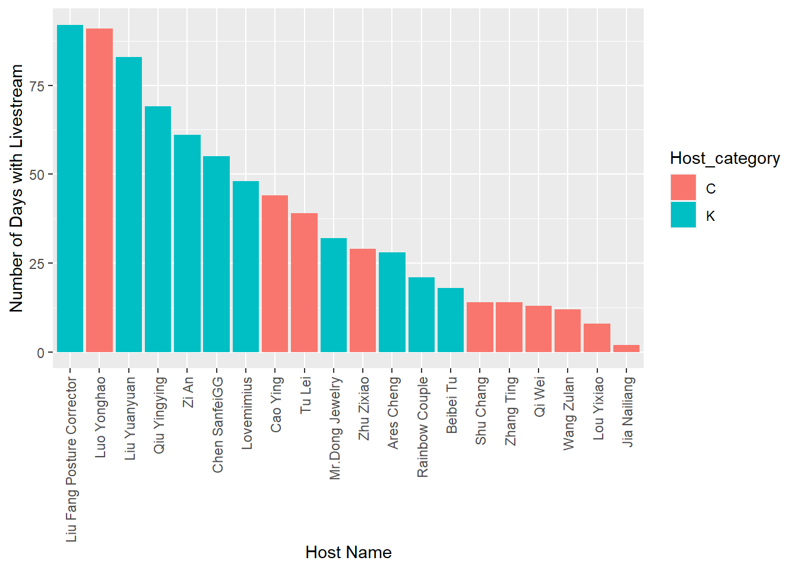
From the graph, we see that Liu Fang, Luo yonghao, and Liuyuanyuan almost held sessions every day.It is clear that KOLs are broadcasting more frequently than celebrities, which is reasonable since most KOLs were broadcasting for their own products (ex. Liu Fang and Liu Yuanyuan) and other KOLs usually signed contracts with companies and thus had a minimal number of days they need to broadcast. Celebrities, on the other hand, had other jobs to do so they didn’t broadcasting as frequently. Luo Yonghao is an outlier in the celebrities group: he was first known by the public as an entrepreneur and actor but now he changed his focus to livestream sales.
5.1.3 Relationship between days of livestream and revenue
Now, let’s look at the relationship between days of livestream and revenue.
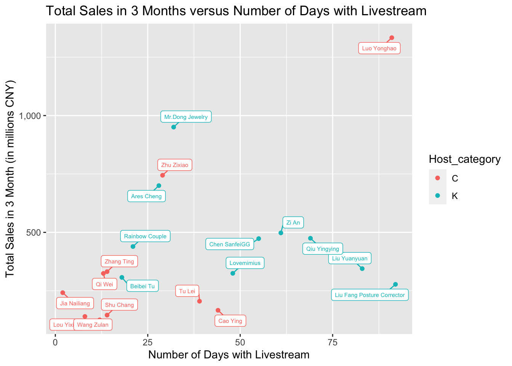
The graph shows KOLs generated more revenues than celebrities overall. Again, Luo Yonghao is an outlier among these top 20 hosts with much more revenue generated. Actually, he is the most successful host in Douyin. Now, let’s explore the revenue difference between the two groups further and look at the average revenue per day.
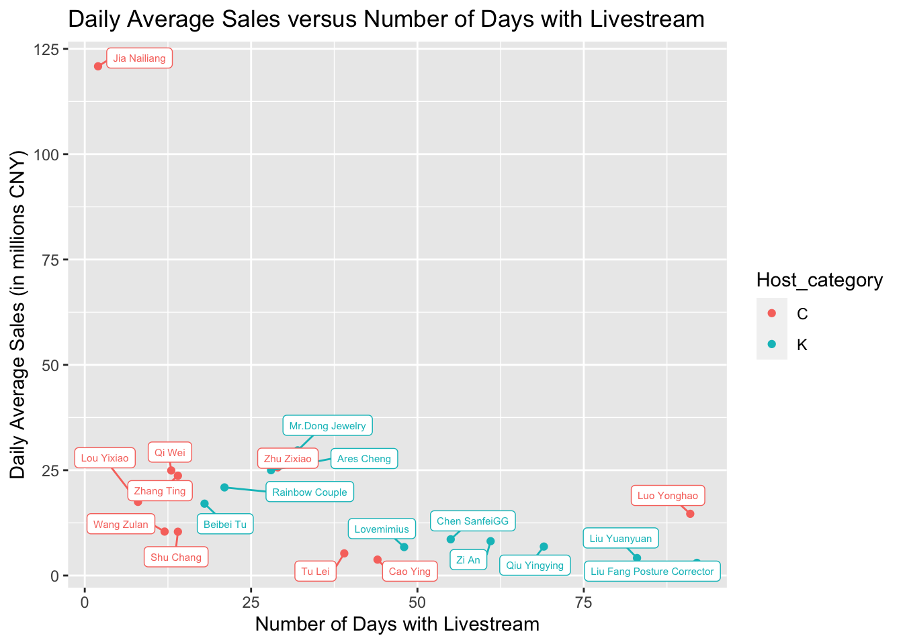
Here, we found another outlier Jia Nailiang, who has very large daily sales and only held a couple sessions. After some research, we found that he just started livesteam sales in mid-Aug and only had two days of broadcasting. Usually, when a celebrity just started to sell goods, he/she would get very good discounts from the business so the price were really attractive to consumers. Fans would also buy a lot to support them. Therefore, for our analysis, we will view Jia Nailiang as an outlier and we will keep track of his future performance and see if his data regression to the mean.
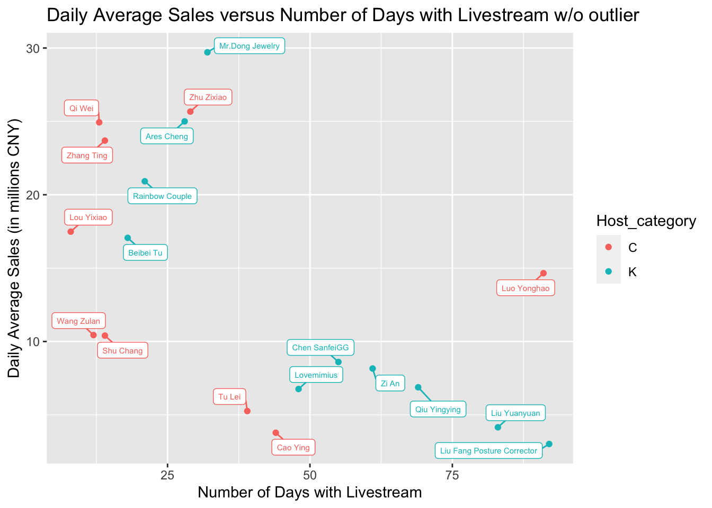
After removing Jia Nailiang, it’s easier to see most celebrities held less than 20 session in the 3 months but they were able to generate more daily revenues. Qi Wei,Lou Yixiao, Zhang Ting, and Zhu Zixiao are famous actresses and they had decent average sales. Another interesting insights we got from the graph is that KOLs were clustered as two groups: a group with large number of livestreams but lower average sales and the other group with fewer livestreams but more average sales. Just looking from the host name, we think it’s probably a result of product mix. For example, Mr.Dong Jewely had most average sale among the 19 hosts; from his name, he was probably selling mostly jewely whose unit price is high and consumers don’t buy that frequently.
5.1.4 Overview of the product mix
We will look more into the product mix in the next section.
Seven categories of products are the following:
## [1] "beauty" "clothing" "jewelry and watches"
## [4] "household" "food" "digital"
## [7] "leisure and others" 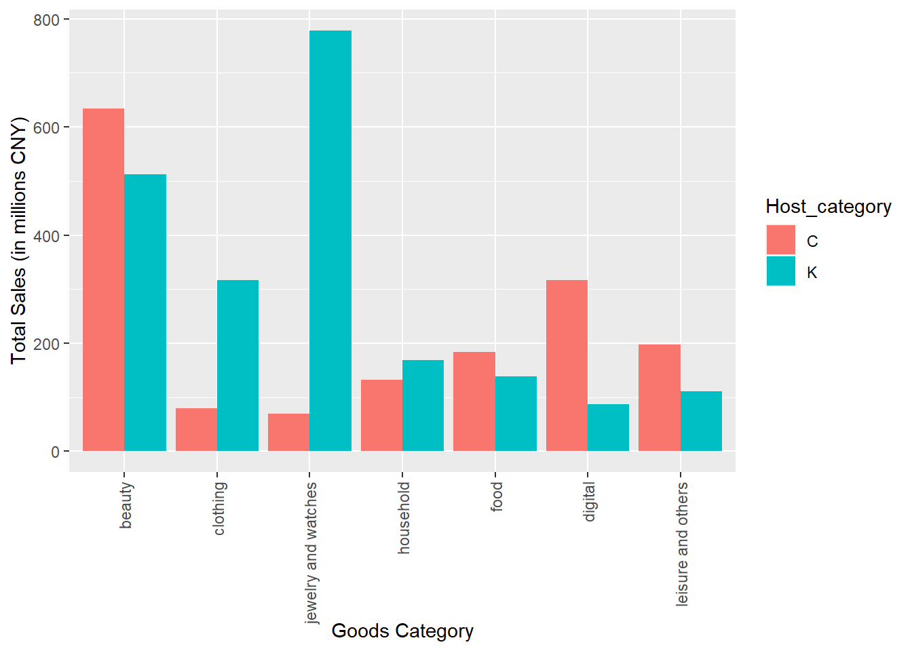
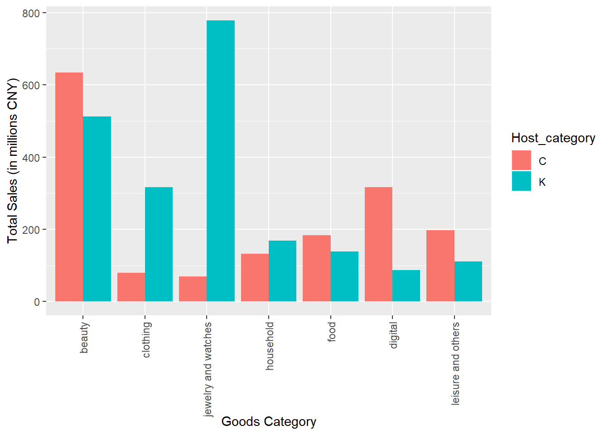
The above graph gives an overview of the product mix for each host among 7 main categories ordered by total revenue. It can be seen that celebrities sold products across most categories and almost all of they sold most in beauty (again, Luo Yonghao is an outlier). KOLs, on the other hand, generated most revenue from 1-3 categories that they had a close relationship with. Let’s zoom in and look at each group with details.
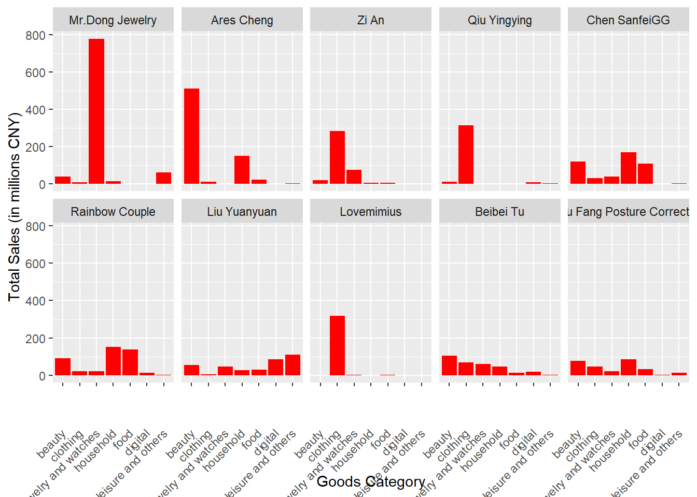
From the graph, we can see Mr.Dong made most money from selling jewelries because he owned the jewerly shop. Zi An, Qiu Yingying and Lovemimius all made most sales in clothing and they also had their own online stores selling clothes. For four of them, they mainly promoted their own products. And viewers in their room should have the expectation about what they were watching and potentially buying Or in the other words, people who came to their rooms should already have a potential interest in the goods. Other KOLs are selling multiple categories of goods and a majority of them did become famous because of short videos and in that sense, they are more like online-celebrities.

The product mix for celebrities are quite different. Besides Luo Yonghao, most celebrities sold all kinds of good with a higher percentage in beauty. This is not hard to understand after thinking through it. E-commerce is not the major income source for celebrities and they don’t usually sign an exclusive agreement with any companies. Therefore, we usually sold whatever goods found by their assistance either with high commission or high discount (so they would attract more people and increase their population). The fact that celebrities didn’t specialize in one category attracts = people with different interests and again diversified what they sell. Another interesting fact is that the most popular category among celebrities is beauty. We think it is due to two reasons. Firstly, beauty is the most popular e-commerce categories overall. Unlike clothes, people don’t need to try on before buying, which makes it easier for e-commerce. Also, beauty products usually have more discounts online and their price elasticity is high (not necessities as household) so lowering the price would trigger more sales. On the other hand, celebrities usually have good-lookings. Therefore, they are more convincing when promoting a beauty product.
5.1.5 Insights and findings
Overall, it agrees with our hypothesis that consumers came to KOL because they have expertise in a specific category and came to celebrities because of their reputation.
5.2 Relationship between short video feedback and live streaming sales
5.2.1 Relationship between the number of like, comments, and repost of the videos and the daily revenues of live streams
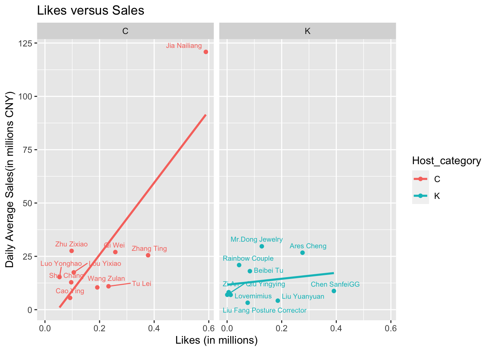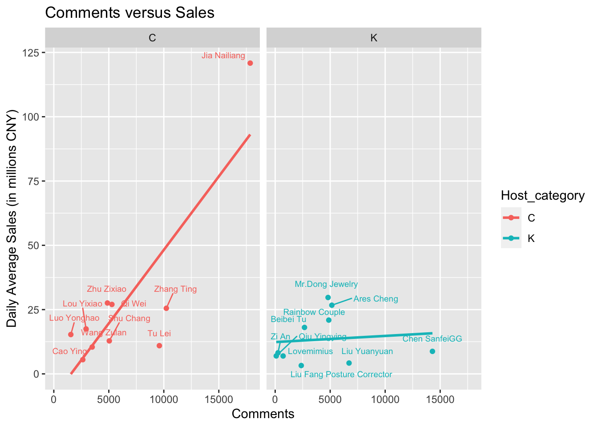
If we have a look at the relationship between the number of like, comments, and repost of the videos posted by each host and the daily revenues of live streams conducted by different hosts, we find that there’s a positive correlation of average revenue to the average likes and comments received by each host’s video. However, this relationship exist only for the celebrities. For the KOL, there’s almost no correlation between their average daily revenue to the average likes and comments for their video. One thing that we also notice is that the average number of repost received by the videos is also uncorrelated to the number of revenue generated by each hosts, no matter these hosts are celebrities or KOL. This could be partly explained by the following image, where we created a scatter plot for the number of like, comments and reposts received by all of the video in our data.
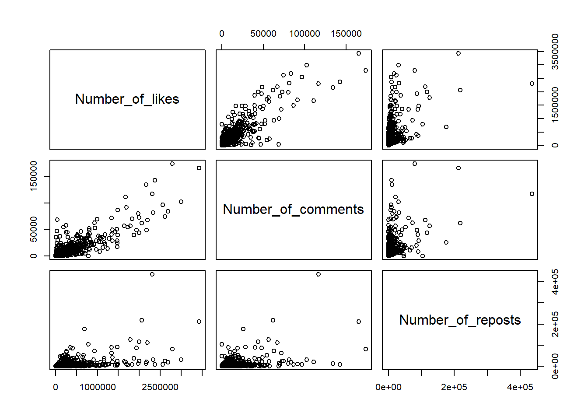
While the number of likes is highly correlated by the number of comments. The number of reposts appear to be not correlated with either comments or likes. Thus, we conclude while people exhibit the same pattern for liking or commenting a douyin video, they exhibit a different pattern for reposting a video, and this different pattern is less related to whether people would actually shop when the poster of these video conduct a live stream.
5.2.2 Relationship of average number of likes and comments versus some other statistic of each session of live streams
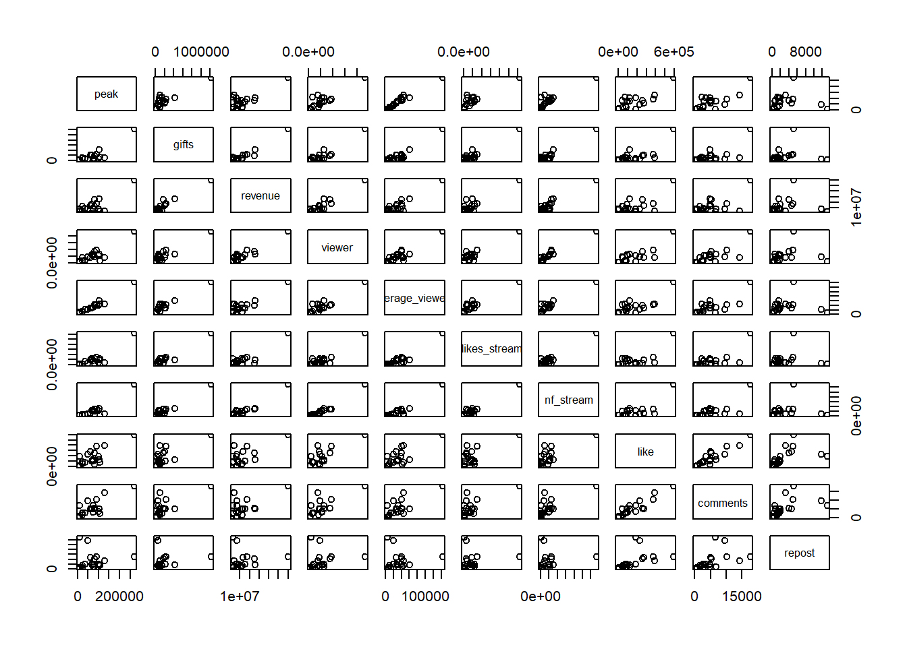
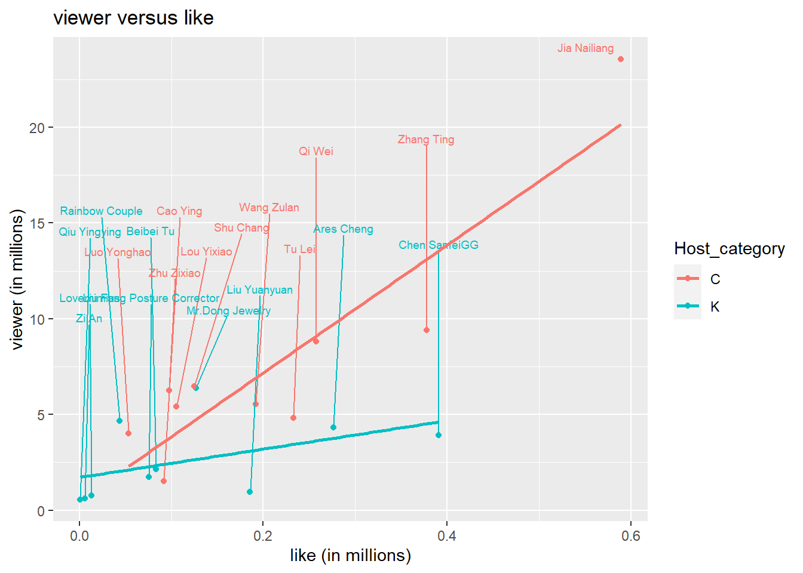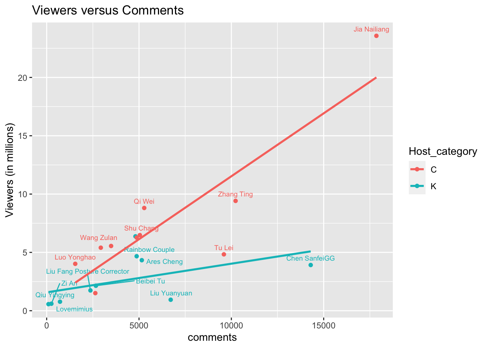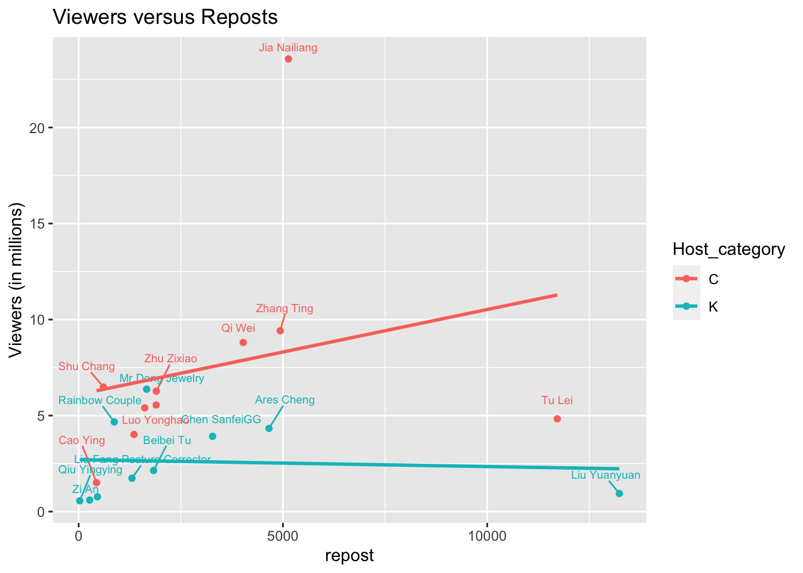
To further investigate why the number of likes and comments are correlated to the daily revenue for celebrities. We explored the relationship of average number of likes and comments versus some other statistic of each session of live streams, including the number of viewers, the number of gifts received, the number of new fans, etc. Here we found that the average number of likes and comments of a host is also correlated to the number of viewers entering a live stream conducted by this host. Compared to the daily revenue, the average number of viewer is more strongly correlated to the number of likes and comments. We also notice that this relationship is much stronger for celebrities compared to KOL.
5.2.3 Insights and findings
Thus, we conclude that whether they are a lot of people likes or comments on a hosts’ videos may direct influence the number of viewers of each live stream of the hosts, because people who like or comment on a host’s video would probably lead to people’s further action of going into the host’s live stream room and check out what the host is selling. However, for celebrities, this action of going into hosts’ room would more likely result in people actually buying stuff, while this is not the same for KOLs.
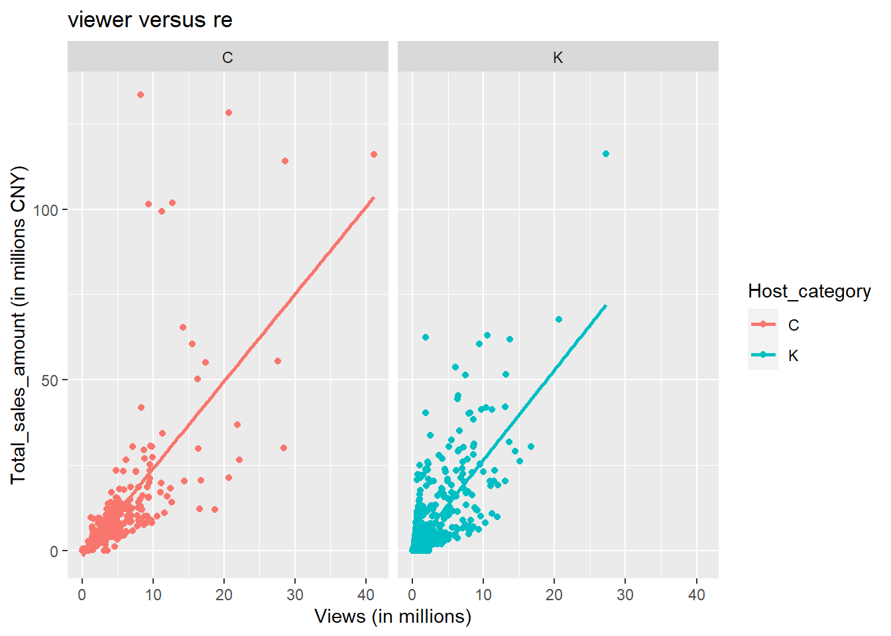
5.3 When is the best time for a live streaming sale?
## [1] "English_United States.1252"When is the best time for a live streaming sale? This is a question that is worth pondering upon.
5.3.1 Difference between Weekdays and weenkends
Do people tend to buy more on weekdays, on weekends, or there is no difference?
To gain insights on the relationship of purchasing power to the day of the week, we visualize the total sales amount (Revenue) by each day in the week through a violin plot. To make sure that only the valid live streaming counts in our analysis, we will only include those live streaming last longer than 5 minutes so that the NA values can be eliminated. The plot tells us not only the mean, which is denoted by the red dot but also the distribution of the total sales amount for each day’s live streaming. For all 7 days, most of the sales are clustered in the bottom, while a small number of large values are pulling the mean up.
As this plot shows, the difference of the seven days in a week in terms of their distribution is not very obvious, as their distribution is similar. But we can still see that Thursday and Monday appear to have lower means compared to the other 5 days. This observation logically makes sense and might be related to consumer behavior in a week, as these two days are the most stressful during a workweek respectively. In general, people like to think of weekends as a time of rest and rejuvenation, and therefore people’s moods are typically at their lowest on Mondays and focus on the transition from relaxation to the new work or school week, which causes them to spend less time and money in watching live streaming. On the other hand, Thursday is the day right before Friday, the end of the work or school week, “the end of the week” feeling pushes people to be stressed and to focus more on their work or study, which might reduce their chance to watch live streaming and accordingly decrease the sales amount. Therefore, in general, selling on Monday and Thursday might be more challenging to generate higher revenue.
The distribution of sales by the two groups of weekdays and weekends reveals that live streaming sales on weekends are more likely to generate a higher sales amount than those on weekdays. Live streaming sales on weekends also have a higher mean than those on weekdays. These observations suggest that selling on weekends is more likely to increase sales amount, which is in line with our intuition.
Does the start time of live streaming affect the sales amount?
5.3.2 time
We plot the average total sales amounts in each hour (in millions of CNY) to the start of the time of live streaming, and find those live-streaming started at 10 AM tends to generate a much higher average total sales amount. Those live streaming started at 10 AM appear to be able to achieve an average total sales amount more than 2 times higher than those live-streaming started in the afternoon. This observation suggests that live streaming starting around 10 AM might be the best choice to improve the average total sales amount.
Does the start time of live streaming be related to duration?
We plot the duration of live streaming to the starting time, and we find those live streaming started around 10 AM tends to have a longer live streaming duration. The smooth curve also indicates the same information that the live streaming started around 10 AM has the peaked duration, and after 10 AM, the duration decreases by time. In addition, the smooth curve shows a similar pattern as the plot of average total sales amounts in each hour (in millions of CNY) to the start of the time of live streaming, which indicates live streaming duration is positively related to the average total sales amounts in each hour.
This plot reaffirms that live streaming duration is positively related to the average total sales amounts in each hour.
Then we analyze the plot of average Sale Amount by hours to duration facet by whether the host is a KOL or not. As the plot shows, the slope of KOL is much steeper, which indicates that the positive relationship between the average total sales amounts in each hour and duration appears to be more significant for KOLs than the non-KOLs.
5.3.3 停留时长与re的关系
When analyzing a viewer’s average stay length in a host’s live streaming, we find an average stay time of 2.5 minutes appear to be the best choice, at which the total sales amount tends to be the highest, no matter the host is a KOL or not. Also, the stay time of KOL’s streaming room scattered more dispersed than that of non-KOLs, ranging from 1 to 8 minutes. On the other hand, the data points of non-KOLs are more clustered, and most of them are less than 3 minutes.